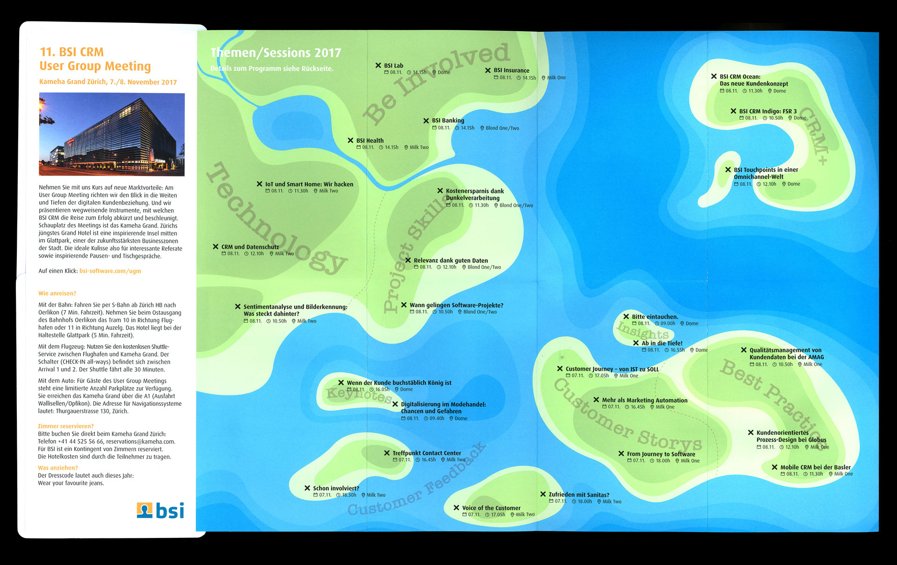
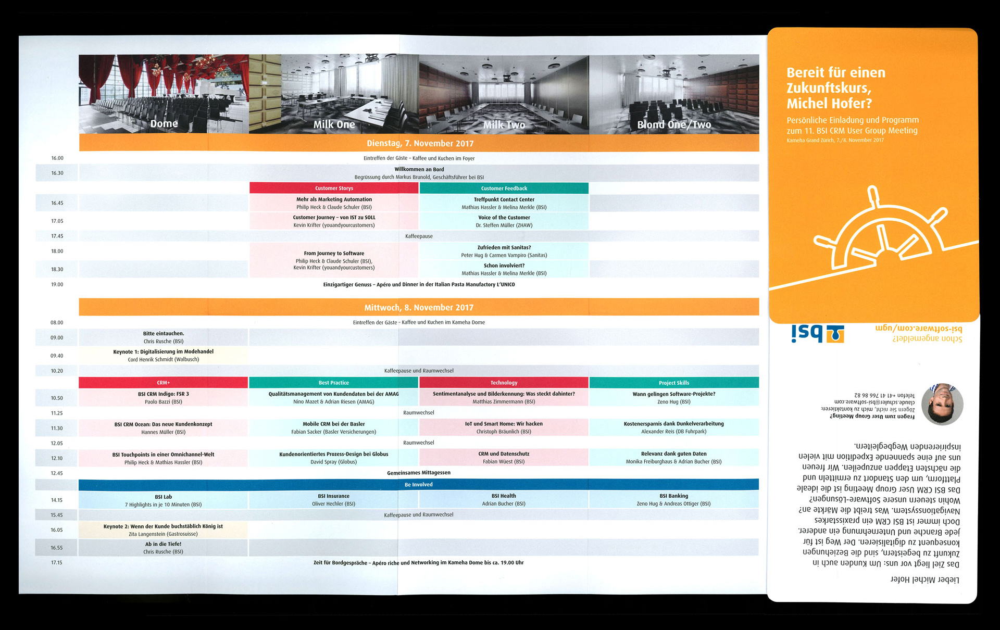
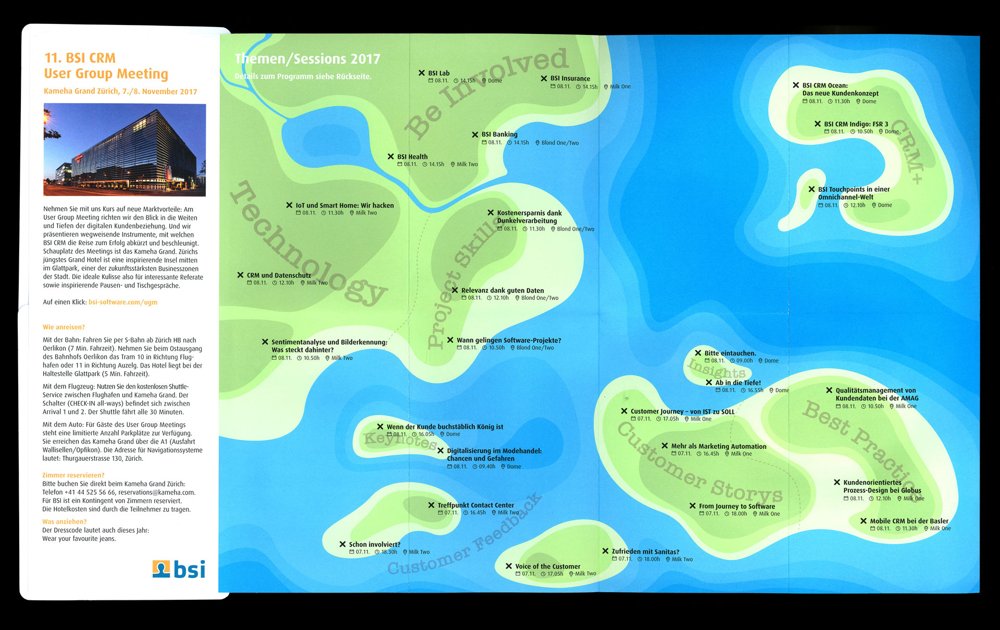
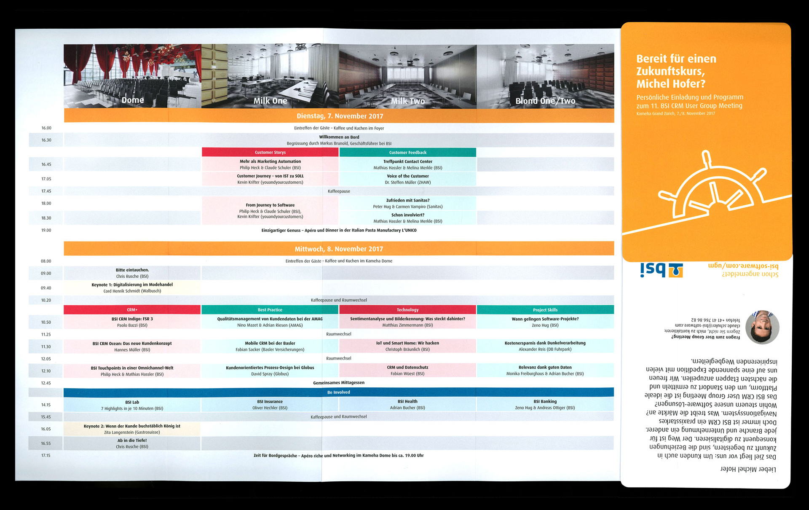

BSI Einladung UGM 2017
Für das alljährlich stattfindende «User Group Meeting» von BSI habe ich für die Ausgabe 2017 den Einladungsfolder gestaltet. Über zwei Tage fanden hier, im Kameha Grand Hotel in Zürich, Workshops und Vorträge statt, zu denen einige der wichtigsten Kunden von BSI eingeladen sind. Neben einem Timetable wurden anhand einen illustrierten Seekarte, passend zum neuen «BSI CRM Ocean», die einzelnen Events und Themenbereiche übersichtlich dargestellt.
 


